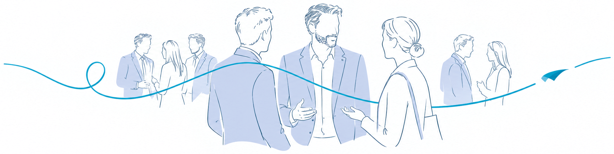

Every colleague
Colleague portal
- Events open to all: socials, site tours and thought leadership
- Book with a quick line manager approval
- Register interest and suggest events
- Feedback and bookings ready for your PDR
Why it matters
Clients choose contractors they know and trust. Those relationships are built long before a tender lands, by people who show what Wates is like to work with.
Our ambassadors will be those people. Together they make sure Wates is in the room with the clients, consultants and project managers who shape our pipeline, prepared, on message and following up. It’s how we turn goodwill into new work and contracts.
You told us
8.9 /10
how important networking is to Wates winning work
79%
want senior leaders to meet staff on progress
44%
of colleagues below manager level did no external networking last year. Ambassadors are open to every level.
The role
01
Attend key client dinners, invitation-only conferences and industry events on behalf of the business.
02
Meet the clients, consultants and project managers we most want to work with, briefed on who they are beforehand.
03
Log who you met and any follow-ups after each event, so the right people at Wates can act on them.
What you get

Two portals
Every colleague keeps the Events at Wates portal. Ambassadors sign in to the same place and see the ambassador portal on top of it.
Every colleague
Selected cohort
How selection works
Step 1
Apply
Talk to your line manager, then answer ten questions about why you believe in Wates and how you build relationships.
Step 2
SLT review
The senior leadership team reads and scores every set of answers against the same guide.
Step 3
Cohort selected
The SLT selects a cohort with a mix of roles and levels from across the business.
Step 4
Training and access
The cohort completes networking training, then special events with pipeline stakeholders open up in their calendars.
Not selected this time? You keep full access to every event open to all staff, and you can apply again next round.
Apply
Ten short questions, about 30 minutes in all. Please talk to your line manager before you apply.
Your application is seen only by the senior leadership team and the Events at Wates admins.
Application submitted
Thanks, Antony. Wates Group will review applications and select the cohort in April 2026, and we’ll email you the outcome. Your line manager has been copied in.
Preview: the ambassador view if you’re selected